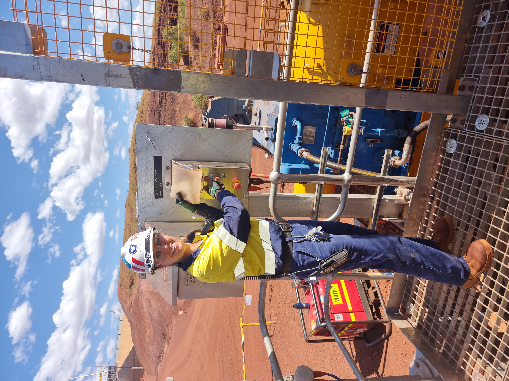

Klara van den Burg
Portfolio
Portfolio
Highly skilled Mechanical Advisor and Operational Readiness expert with over 6.5 years of experience in plant operations, commissioning, and project management within the mining industry. Additionally, five months of experience in Resource and Development frontline leadership, including the development of a contractor portal to provide efficient and secure access to documentation for contracting partners via their own work devices. With a proven track record of identifying and resolving complex mechanical and technical issues, driving operational excellence, optimising plant performance, and leading innovative projects with a focus on robotics and automated systems. An expert in bringing a human touch to innovation and integration, guiding end-users through the journey to understand products that fulfil critical business needs. Award- Winner of the inaugural Chamber of Commerce and Industry, WA, Inclusion and Diversity award – Workplace wellbeing 2024 for “The Bench Seat Project”. The Bench Seat Project is a wellbeing initiative that I developed initially for Gudai Darri but has since inspired the recent changes in Rio Tinto's Global Everyday Respect inclusive facilities guidance note for a wellness area in every office building and village. Awarded Rio Tinto's Global Rockstar of the Year 2024 in the Care and Impact category, recognising my contributions at Gudai-Darri, including initiatives to enhance psychological safety for the workforce and the successful implementation of the Bench Seat Project. Seeking to leverage extensive experience in mining operations to contribute to the continued success and growth of the business, I am committed to delivering high-value outcomes while maintaining the highest standards of safety and operational excellence.